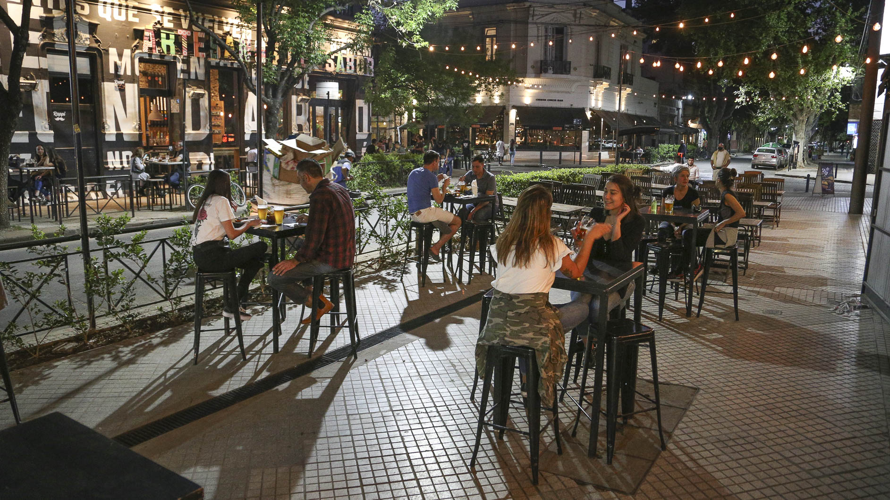
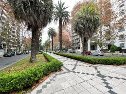
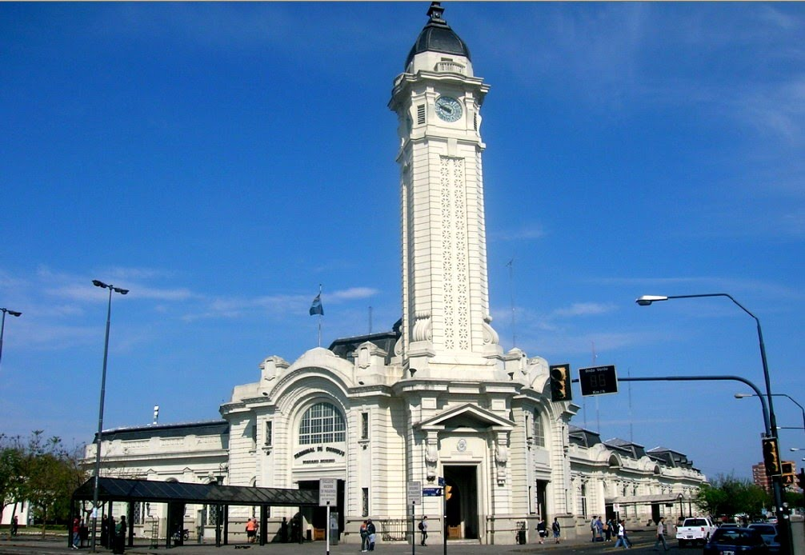
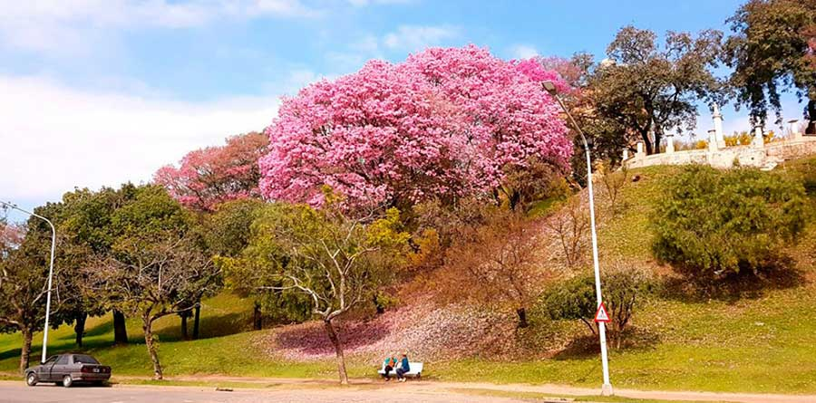
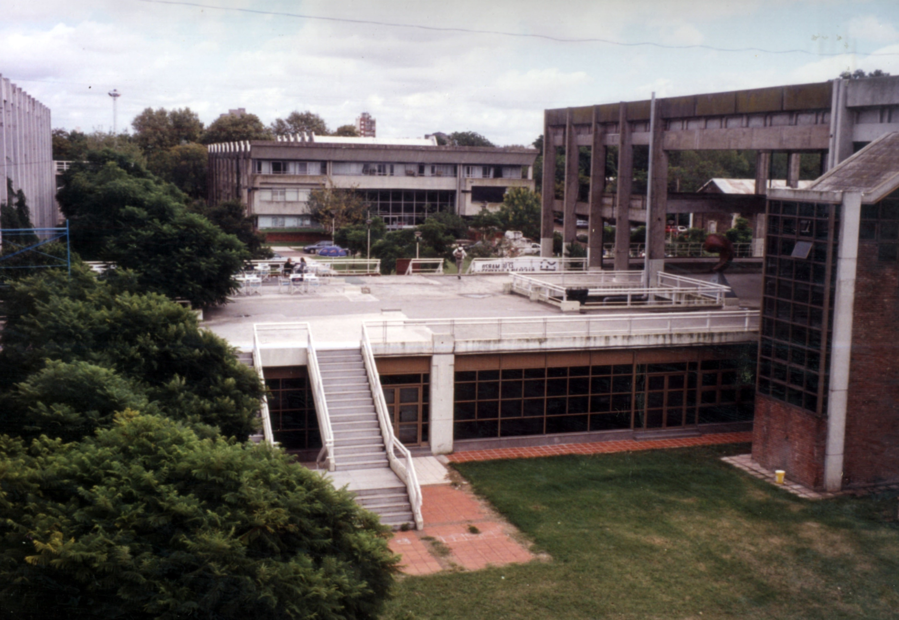

01
Pichincha
Barrio histórico · gastronómico
Departamentos del Distrito Centro de Rosario. Hacé click en "Ver demo" para reproducir el caso.

Barrio histórico · gastronómico

Frente al Paraná · Puerto Norte

Conectividad · tránsito

Residencial consolidado

Zona universitaria